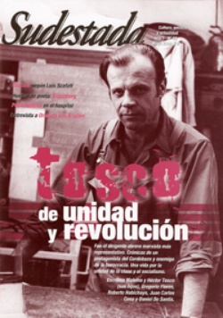

Buscar
Drácula, por Luis Scafati
La historia del vampiro más famoso de Transilvania, en las tintas del ilustrador Luis Scafati. El tiempo, el erotismo y el terror como colores de una paleta que reconstruye una leyenda sin final; la del Nosferatu.
Edición N° 68
Mayo 2008
Revista bimensual
Comprar edición impresaSumario
- Agustín Tosco: de unidad y revolución
- Las miserias de Heker
- Drácula, por Luis Scafati
- Orlando Van Bredam: "La literatura es siempre un pretexto..."
- Payamédicos: clown en el hospital
- Alfonso Hernández: confesiones de Tutuy
Compartir Articulo
Cuando el lector abre las páginas del Drácula ilustrado por Luis Scafati, se sumerge en un oceáno de aguas turbulentas, donde no hay orillas por encima del blanco y negro y donde apenas surge un rojo sangriento como señal del terror, que va creciendo. El mítico Conde retrasa su aparición, y esa ausencia potencia una atmósfera sórdida, tenebrosa. Es que el lector quizá conoce la historia del vampiro de Bram Stoker, pero las tintas de Scafati lo manchan, implacables, con sombras nuevas, espectros diferentes y el murmullo eterno del Nosferatu que, ahora sí, se asoma en la página... y sonríe.
El pintor mendocino le abre a Sudestada el tintero de la memoria para recorrer con sus plumas el otro lado del vampiro más famoso, en una conversación bajo el custodio gótico de un Drácula de cartón, que no deja de mirar la escena.
-¿Cuál fue el disparador para su trabajo con Drácula?
-Primero, la historia. Empezó así: una editorial me convocó para ilustrar el libro de Bram Stoker. Lo leí, me gustó mucho, pero desistí de ilustrarlo y empecé a armar algo con esa idea tan oscura, tan llena de símbolos. Lo tomé libremente, como quien hace una adaptación para cine. Me parece que el dibujo y la escritura están muy cercanos, por eso no es de extrañar que dibujantes sean escritores y viceversa, como Günter Grass, Victor Hugo y tantos otros. Considero que la escritura y el dibujo cuentan algo. Comencé el relato dibujándolo, se fue armando una interpretación del libro Drácula y me tomé esa libertad, habiendo visto todo lo que se hizo sobre él.
-¿Qué características del personaje le interesaron?
-Está el tiempo como elemento, como algo que marca el personaje. El tiempo y la muerte, dos temas que a mí siempre me obsesionaron. La muerte como pasaje a otra cosa, y el tema del constante cambio de las cosas en que se desarrolla lo que es la vida. Esto era un piso importante desde donde partir.
Después está el erotismo. Yo sentía que en el libro estaba muy obturado pero que latía, por una cuestión de época. Pero tiene que ver, no solo en el sentido sexual, el erotismo como cosa vital. El personaje en sí es atractivo, alguien que está vivo, pero vive en esa cosa intemporal. Paradójicamente, todos tenemos miedo a morir, pero vivir así, sin la muerte, es trágico. Siempre recordé un cuento de Borges, "Los inmortales", que tiene mucho de eso. El libro se transforma después en algo más policial y, a pesar del clima gótico, se divide entre buenos y malos.
-¿Cómo fue la construcción física de Drácula como protagonista, después de tantas películas?
-Yo trabajé bastante con la imagen. Hacer un personaje entre la vida y la muerte, esa cosa cadavérica, medio animal, con alas de murciélago... Quise armarlo con un aspecto casi animal, trabajar con eso que aparece muy subrayado en la primera parte del libro de Stoker. Y por el camino recorrí el erotismo, el tiempo y la muerte, y este tema entre bestia-animal-salvaje. A veces olvidamos que también nosotros somos animales, que somos naturaleza, y en Drácula está eso...
(La nota completa en la edición gráfica de Sudestada Nº68 - Mayo 2008)
Comentarios
Ignacio Portela
Articulos más vistos


LIBRERÍA SUDESTADA

Colección infantil

Distribuidora de Libros

Suscripción

Sudestada en URUGUAY

Otros articulos de esta edición
 Nota de tapa
Nota de tapa
Agustín Tosco: de unidad y revolución
Fue el dirigente obrero marxista más representativo. Crónicas de un protagonista del Cordobazo y enemigo de la burocracia. Una vida ...
 Entrevista
Entrevista
Orlando Van Bredam: "La literatura es siempre un pretexto..."
Un narrador que juega con la ironía y el humor y que, a través de su escritura, describe el mundo ...
 Editorial
Editorial
Las miserias de Heker
Menos mal que este país se olvidó la memoria. Sólo así es posible comprender el doble discurso de ciertas voces ...
Payamédicos: clown en el hospital
Mediante el juego, la magia y la fantasía, combinan la creación artística con la investigación científica, generan belleza y poesía ...
 Poesía
Poesía
Alfonso Hernández: confesiones de Tutuy
Un cronista en la búsqueda de una sombra, una historia desgarrada, versos sueltos en la calle. Alfonso Hernández, de profesión ...